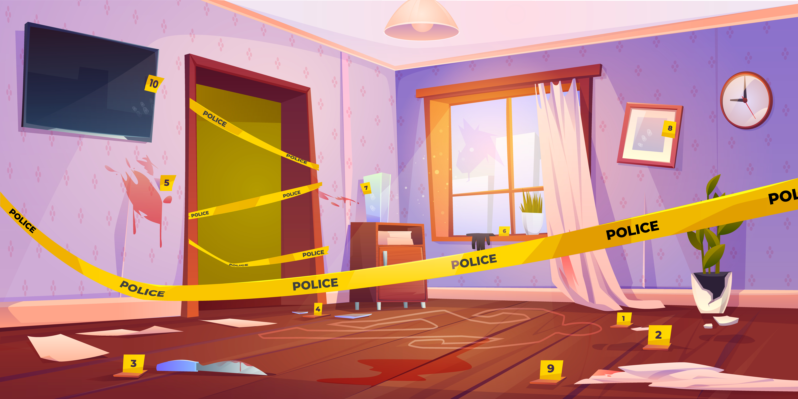

{% extends 'base.html' %}
{% block title %}
Le détective
{% endblock %}
{% block content %}
Enoncé

Un meurtre a été commis. En effet on a retrouvé le corps sans vie de Manolo Popolo.
C'était ton meilleur ami et tu te décides à mener ta propre enquête. Des indices ont été laissés